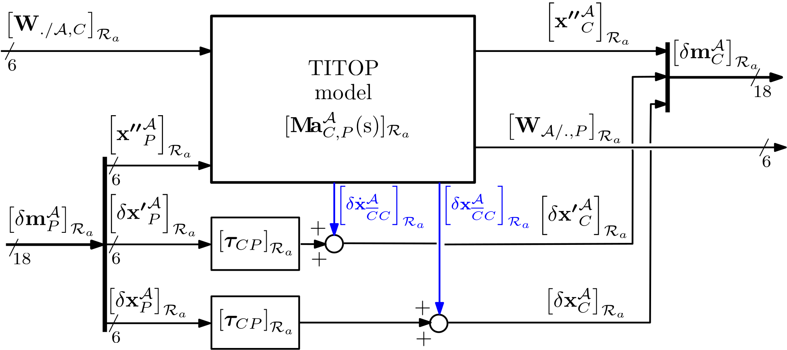
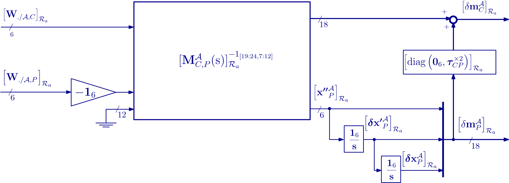
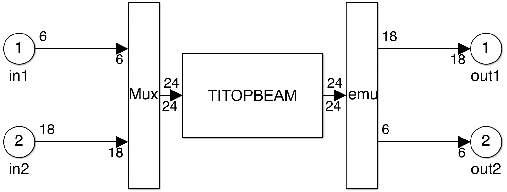
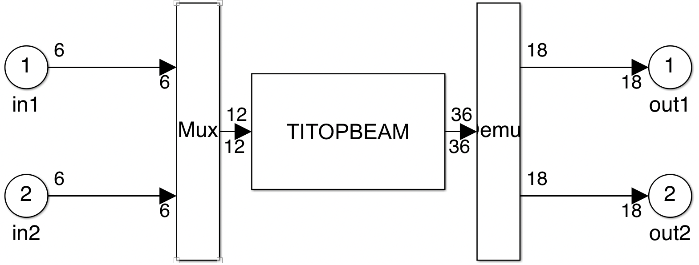
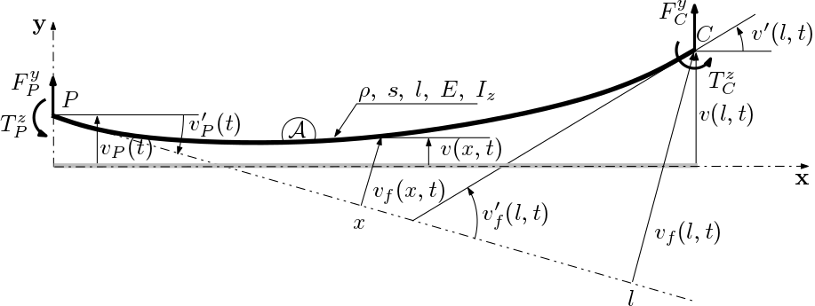

2 ports flexible beam
TITOP (Two-Inputs Two-Outputs Port), linear and analytical model of a flexible beam.
This block implements the $24 \times 24$ TITOP model of a flexible beam. The 2 ports of this model are:
- the port at point $C$, i.e.: the $18\times 6$ channel from the wrench applied to the beam at point $C$ by the child substructure to the motion vector of point $C$,
- the port at point $P$, i.e.: the $6\times 18$ channel from the motion vector of point $P$ to the wrench applied by the beam to the parent substructure at point $P$.
The obtained model is expressed in its reference frame $\mathcal{R}_a $.
Thus the beam $\mathcal{A}$ is modeled under the clamped at $P$ - free at $C$ boundary conditions.
A check-box "Free body at P" allows to free the model at the port $P$. Then the model is $36\times 12$ and includes $12$ integrators to model the $6$ rigid modes at the point $P$. The last $18\times 6$ channel corresponds to the channel from the wrench applied to the body at the point $P$ to the motion vector of the point $P$.
See also: General notations, 1-port flexible body, N-port NASTRAN flexible body, Multi-Port_rigid_body
Contents
Description
Considering a beam $\mathcal{A}$ described in the following Figure
Figure 1: A flexible beam in 3D.
and characterized by
- the local frame $\mathcal{R}_a$,
- the dimensions: $l\,(m)$, $s\,(m^2)$, $I_z\,(m^4)$ and $I_y\,(m^4)$,
- mass density: $\rho$,
- Young modulus $E$ and Poisson coefficient $\nu$.
Let us define:
- $\left[\mathbf{W}_{./\mathcal{A},C}\right]_{\mathcal{R}_a}$: the external wrench ($6\times 1$) applied to the beam at point $C$, expressed in $\mathcal{R}_a$,
- $\left[\delta\mathbf m^{\mathcal A}_{C} \right]_{\mathcal{R}_a}$: the motion vector ($18\times 1$) of the beam at point $C$, expressed in $\mathcal{R}_a$,
- $\left[\delta\mathbf m^{\mathcal A}_{P} \right]_{\mathcal{R}_a}$: the motion vector ($18\times 1$) of the beam at point $P$, expressed in $\mathcal{R}_a$,
- $\left[\mathbf{W}_{\mathcal{A}/.,P}\right]_{\mathcal{R}_a}$: the wrench ($6\times 1$) applied by the beam at point $P$, expressed in $\mathcal{R}_a$.
- [$\mbox{trans}_{\;y},\;\mbox{rot}_{\;z}$] for which the motion is assumed to be pure flexion in the plane $(P,\mathbf{x},\mathbf{y})$ (see also: Pure flexion dynamics) and computed using a $5$-th order polynomial approximation in $x$ of the deflection $v(x,t)$ (see also: (C. Jawhar et al.))
- [$\mbox{trans}_{\;z},\;\mbox{rot}_{\;y}$] for which the motion is assumed to be pure flexion in the plane $(P,\mathbf{x},\mathbf{z})$ and computed analogously to the previous case,
- [$\mbox{rot}_{\;x}$] for which the motion is assumed to be pure torsion around $(P,\mathbf{x})$-axis (see also: Torsion dynamics) and computed using a $1$-th order polynomial approximation in $x$ of the angular deflection $\theta(x,t)$ ,
- [$\mbox{trans}_{\;x}$] for which the motion is assumed to be pure traction along $(P,\mathbf{x})$-axis (see also: Traction dynamics) and computed using a $1$-th order polynomial approximation in $x$ of the linear deflection $u(x,t)$ ,
The TITOP model $[\mathbf M^{\mathcal A}_{C,P}(\mathrm s)]_{\mathcal R_a}$ of the flexible beam is described by the following block diagram:
When the motion vectors $\left[ \delta\mathbf m^{\mathcal A}_{P} \right]_{\mathcal{R}_a}$ and $\left[ \delta\mathbf m^{\mathcal A}_{C} \right]_{\mathcal{R}_a}$ are reduced to the first $6$ components of the dual acceleration vector $\left[\boldsymbol{ \mathbf{x''}}^{\mathcal A}_{P} \right]_{\mathcal{R}_a}$ and $\left[\boldsymbol{ \mathbf{x''}}^{\mathcal A}_{C} \right]_{\mathcal{R}_a}$, the TITOP model is denoted $\mathbf{M\!a}^{\mathcal{A}}_{C,P}(\mathrm s)$ and is detailled in sections (Pure flexion dynamics) to ($12 \times 12$ TITOP model assembly). Then it is possible to ouput the internal deflextion $\left[\delta\boldsymbol{ \mathbf{x}}^{\mathcal A}_{\overline CC} \right]_{\mathcal{R}_a}$ of the beam at the free tip $C$ and its time-derivative $\left[\delta\dot{\boldsymbol{ \mathbf{x}}}^{\mathcal A}_{\overline CC} \right]_{\mathcal{R}_a}$ (see also: General notations/Flexible body). The model $[\mathbf M^{\mathcal A}_{C,P}(\mathrm s)]_{\mathcal R_a}$ considering the full motion vectors can be built according to the following Figure where $\left[\boldsymbol{\tau}_{CP} \right]_{\mathcal{R}_a}$ is the "rigid" kinematic model between points $P$ and $C$ (see also: Kinematic model on the motion vector.

If the check box "Free body at P" is selected, then: let us denote $[\mathbf M^{\mathcal A}_{C,P}(\mathrm s)]_{\mathcal R_a}(19:24,7:12)$ the transfer from $\left[\boldsymbol{ \mathbf{x''}}^{\mathcal A}_{P} \right]_{\mathcal{R}_a}$ (the $6$ components acceleration dual vector at the point $P$) to $\left[ \mathbf{W}_{\mathcal{A}/.,P} \right]_{\mathcal{R}_a}$ (the $6$ components wrench). This chanel is then inverted and $12$ integrators are added according to following Figure to output the motion vector $\left[ \delta\mathbf{m}^{\mathcal A}_{P} \right]_{\mathcal{R}_a}$ of the body $\mathcal A$ at the point $P$.

$\mathbf G(\mathrm s)^{-1_{[I,J]}}$ denotes the system $\mathbf(\mathrm s)$ where the channel from the inputs numbered in $I$ to the outputs numbered in $J$ is inverted (the vector of indices $I$ and $J$ must have the same length).
Ports
Inputs:
- W./body,C $=\left[\mathbf{W}_{./\mathcal{A},C}\right]_{\mathcal{R}_a}$: 6 component signal (units: $N$ and $N.m$),
- m_P $=\left[\delta\mathbf m^{\mathcal A}_{P} \right]_{\mathcal{R}_a}$: 18 component signal (units: $m/s^2$, $rd/s^2$, $m/s$, $rd/s$, $m$, $rd$)
or, if "Free body at P" is selected, W./body,P $=\left[\mathbf{W}_{./\mathcal{A},P}\right]_{\mathcal{R}_a}$: 6 component signal (units: $N$ and $N.m$).
Outputs:
- m_C $=\left[\delta\mathbf m^{\mathcal A}_{C} \right]_{\mathcal{R}_a}$: 18 component signal (units: $m/s^2$, $rd/s^2$, $m/s$, $rd/s$, $m$, $rd$),
- Wbody/.,P $=\left[\mathbf{W}_{\mathcal{A}/.,P}\right]_{\mathcal{R}_a}$: 6 component signal (units: $N$ and $N.m$)
or, if "Free body at P" is selected, m_P $=\left[\delta\mathbf{m}^{\mathcal A}_{P}\right]_{\mathcal{R}_a}$: 18 component signal (units: $m/s^2$, $rd/s^2$, $m/s$, $rd/s$, $m$, $rd$).
Parameters
The parameters are:
- length along $x$ (unit: $m$): $l$,
- cross section (unit: $m^2$): $s$,
- mass density (unit: $Kg/m^3$): $\rho$,
- Young modulus (unit: $N/m^2$): $E$,
- second moment of area along z axis (unit: $m^4$), $I_z$,
- second moment of area along y axis (unit: $m^4$), $I_y$,
- Poisson coefficient; $\nu$,
- damping ratio; $\xi$,
A check box "Free body at P".
- A check box to overright the uncertainties on the physical paramets (length, mass desity,...) by a common relative uncertainty (percentage) on the first $n_u\le 10$ flexible mode frequencies of the clamped at P / free at C beam
Simulink diagram under the mask

or, if "Free body at P" is selected:

Pure flexion dynamics in the plane ($P,\mathbf{x},\mathbf{y}$):
Dynamics of pure flexion in the plane ($P,\mathbf{x},\mathbf{y}$) concerns the 2 degrees-of-freedom $\mbox{trans}_{\;y},\;\mbox{rot}_{\;z}$ of the beam.

Figure 3: Pure flexion in the plane ($P,\mathbf{x},\mathbf{y}$).
The deflection along $\mathbf{y}$ of a point of abscissa $x$ is denoted $v(x,t)$. Let us defined: $$\mathbf{q}(x,t)=\left[\begin{array}{c}v(x,t) \\ v'(x,t) \\ v''(x,t) \end{array}\right]$$
with: $v'(x,t) = \frac{\partial v}{\partial x}(x,t)$ and $v''(x,t) = \frac{\partial^2 v}{\partial x^2}(x,t)$Coordinates and associated shape functions:
The rigid and flexible motion can be split by introducing the motion of the point $P$ through the rigid vertical displacement ($v_P(t)=v(0,t)$) and the rotation ($v'_P(t)=v'(0,t)$) of $P$: $$ v(x,t) = v_P(t) + x v'_{P}(t) + v_f(x, t)\;. $$ The flexible part $v_f(x, t)$ is approximated by a $5$-th order polynomial in $x$: $$v_f(x,t) = \mathbf{P}_{v_f}(x)^T \mathbf{a}_f(t)$$ where $\mathbf{P}_{v_f}(x)$ is a vector of 4 elementary monomials: $$\mathbf{P}_{v_f}(x) = [x^2,\; x^3,\; x^4,\; x^5]^T $$ such that : $v_f(0,t)=0\quad \mbox{and}\quad v'_f(0,t)=0\quad\forall^;t$.
$\mathbf{a}_f(t)$ is the vector of the time-dependent polynomial coefficient.
Analogously:
- $v'_f(x,t)= \mathbf{P}'_{v_f}(x)^T \mathbf{a}_f(t)$,
- $v''_f(x,t)= \mathbf{P}''_{v_f}(x)^T \mathbf{a}_f(t)$.
Considering the 4 component vector of flexible coordinates: $$\mathbf{q}_{f}(t)=\left[\begin{array}{c}v''_f(0,t) \\ v_f(l,t) \\ v'_f(l,t) \\ v''_f(l,t) \end{array}\right]=\underbrace{[\mathbf{P}''_{v_f}(0)\quad \mathbf{P}_{v_f}(l)\quad \mathbf{P}'_{v_f}(l)\quad \mathbf{P}''_{v_f}(l)]^T}_{\mathbf{P}_{4\times 4}} \mathbf{a}_f(t),$$ one can express the vector of $4$ time-dependent coefficient $\mathbf{a}_f(t)$ as a function of the vector of flexible coordinates: $$ \mathbf{a}_f(t)= \mathbf{P}^{-1}\mathbf{q}_f(t)\;. $$
Then, defining the vector of the 2 rigid coordinates (at point $P$): $\mathbf{q}_r(t)=\mathbf{q}_P(t)=[v_P(t),\; v'_P(t)]^T$, one can express: $$\mathbf{q}(x,t)=\boldsymbol{\Phi}_r(x) \mathbf{q}_r(t)+ \boldsymbol{\Phi}_f(x) \mathbf{q}_f(t)\quad \mbox{with:}\;\boldsymbol{\Phi}_r(x)=\left[\begin{array}{ccc} 1 & x \\ 0 & 1\\ 0 & 0 \end{array}\right];\;\mbox{and}\;\boldsymbol{\Phi}_f(x)=\mathbf{P}_f(x)^T\mathbf{P}^{-1}\;.$$ $$\mbox{or: }\mathbf{q}(x,t)=\underbrace{[\boldsymbol{\Phi}_r(x)\quad \boldsymbol{\Phi}_f(x)]}_{\boldsymbol{\Phi}(x)_{3\times 6}}\left[\begin{array}{c}\mathbf{q}_r(t) \\ \mathbf{q}_f(t) \end{array}\right]$$
Mass and stiffness matrices
The kinetic energy is given by $$ \mathcal{T} = \frac{1}{2} \int_{0}^{l} \dot{\mathbf{q}}^T \left[\begin{array}{ccc} \rho s & 0 & 0\\ 0 & \color{red}{0} & 0\\ 0 & 0 & 0\ \end{array}\right] \dot{\mathbf{q}} \,dx=\frac{1}{2} \left[\begin{array}{c}\dot{\mathbf{q}}_r \\ \dot{\mathbf{q}}_f \end{array}\right]^T\left[\begin{array}{cc}\mathbf{M}_{rr} & \mathbf{M}_{rf}\\ \mathbf{M}_{fr} & \mathbf{M}_{ff}\end{array}\right]\left[\begin{array}{c}\dot{\mathbf{q}}_r \\ \dot{\mathbf{q}}_f \end{array}\right] $$ with the mass matrix: $\mathbf{M}=\left[\begin{array}{cc}\mathbf{M}_{rr} & \mathbf{M}_{rf}\\ \mathbf{M}_{fr} & \mathbf{M}_{ff}\end{array}\right]=\int_{0}^{l} \left[\begin{array}{c} \boldsymbol{\Phi}_r^T \\ \boldsymbol\Phi_f^T \end{array}\right] \left[\begin{array}{ccc} \rho s & 0 & 0\\ 0 & \color{red}{0}& 0\\ 0 & 0 & 0\\ \end{array}\right][ \boldsymbol{\Phi}_r \;\; \boldsymbol\Phi_f ] \,dx\;.$
The red $\color{red}{0}$ in the matrix, instead of $\rho\,I_z$, highlights that the rotational contribution to the kinetic energy is neglected.
(Rk: $\mathbf{M}_{rf}=\mathbf{M}_{fr}^T$)
The elastic potential energy is given by: $$ \mathcal{K} = \frac{1}{2} \int_{0}^{l} \mathbf{q}^T \left[\begin{array}{ccc} 0 & 0 & 0\\ 0 & 0 & 0\\ 0 & 0 & E\,I_z\ \end{array}\right] \mathbf{q} \,dx=\frac{1}{2} \left[\begin{array}{c}\mathbf{q}_r \\ \mathbf{q}_f \end{array}\right]^T\left[\begin{array}{cc}\mathbf{0}_{2\times 2} & \mathbf{0}_{2\times 4}\\ \mathbf{0}_{4\times 2} & \mathbf{K}_{4\times 4}\end{array}\right] \left[\begin{array}{c}\mathbf{q}_r \\ \mathbf{q}_f \end{array}\right] $$ with the stiffness matrix: $\mathbf{K}=\int_{0}^{l} \boldsymbol\Phi_f^T \left[\begin{array}{ccc} 0 & 0 & 0\\ 0 & 0 & 0\\ 0 & 0 & E\,I_z\\ \end{array}\right] \boldsymbol\Phi_f \,dx\;.$
2-port model
Let us denote (see Figure 3):
- $\mathbf{W}_{\mathcal{A}/.,P}=[F_P^y\quad T_P^z]^T$ the 2 d.o.f wrench (1 force and 1 torque) applied by the beam to the parent substructure at the point $P$,
- $\mathbf{W}_{./\mathcal{A},C}=[F_C^y\quad T_C^z]^T$ the 2 d.o.f wrench (1 force and 1 torque) applied to the beam by the child substructure at the point $C$.
Using the eigen-vector matrix $\mathbf{V}$ of the eigenvalue problem $ \mathbf{V}\boldsymbol{\Omega}^2 = \mathbf{M}_{ff}^{-1} \mathbf{K} \mathbf{V} \quad \mbox{where } \boldsymbol{\Omega}^2 = \mbox{diag}(\omega_i^2),\;i=1\cdots 4$, one can introduce the damping matrix $\mathbf{D}=\mathbf{V}\,\mbox{diag}(2\xi\omega_i)\,\mathbf{V}^{-1}$
The 2 d.o.f. acceleration twists at points $P$ and $C$ are written as: $\ddot{\mathbf{q}}_P(t) = \ddot{\mathbf{q}}_r(t)$ and $\ddot{\mathbf{q}}_C(t)=\ddot{\mathbf{q}}_{1:2}(l,t)= [\boldsymbol{\Phi}_{r,1:2}(l)\quad \boldsymbol{\Phi}_{f,1:2}(l)]\left[\begin{array}{c}\ddot{\mathbf{q}}_r(t) \\ \ddot{\mathbf{q}}_f(t) \end{array}\right]$
Then, the 2 ports model ($4\times 4$ )for the beam $\mathcal{A}$ considering as inputs the acceleration twist at the parent node $P$ and the wrench at the child node $C$ is denoted ${}^y \mathbf{B}^{\mathcal{A}}_{C,P}(\mathrm{s})$ and can be described by the following state-space representation ($\mathbf{q}_r$ is renamed $\mathbf{q}_P$):
$$ \left[\begin{array}{c}
\dot{\mathbf{q}}_f \\
\ddot{\mathbf{q}}_f \\
\hline \ddot{\mathbf{q}}_C \\
\mathbf{W}_{\mathcal{A}/.,P} \end{array}\right]
=
\left[
\begin{array}{cc|cc}
\mathbf{0}_{4 \times 4} & \mathbf{1}_{4} & \mathbf{0}_{4 \times 2} & \mathbf{0}_{4 \times 2} \\
-\mathbf{M}_{ff}^{-1}\mathbf{K} & -\mathbf{D} &
\mathbf{M}_{ff}^{-1}{\boldsymbol{\Phi}_{f,1:2}}^T(l) & - \mathbf{M}_{ff}^{-1} \mathbf{M}_{fr}\\
\hline
-\boldsymbol{\Phi}_{f,1:2}(l)\mathbf{M}_{ff}^{-1}\mathbf{K} & -\boldsymbol{\Phi}_{f,1:2}(l)\mathbf{D} & \boldsymbol{\Phi}_{f,1:2}(l)\mathbf{M}_{ff}^{-1}{\boldsymbol{\Phi}_{f,1:2}}^T(l) & \left(\boldsymbol{\Phi}_{r,1:2}(l) - \boldsymbol{\Phi}_{f,1:2}(l)\mathbf{M}_{ff}^{-1} \mathbf{M}_{fr}\right) \\
\mathbf{M}_{rf}\mathbf{M}_{ff}^{-1}\mathbf{K}
& \mathbf{M}_{rf}\mathbf{D}
& \left(\boldsymbol{\Phi}_{r,1:2}(l) - \boldsymbol{\Phi}_{f,1:2}(l)\mathbf{M}_{ff}^{-1} \mathbf{M}_{fr}\right)^T
& \mathbf{M}_{rf}\mathbf{M}_{ff}^{-1}\mathbf{M}_{fr}-\mathbf{M}_{rr} \\
\end{array}
\right] \left[\begin{array}{c}
\mathbf{q}_f \\
\dot{\mathbf{q}}_f \\
\hline \mathbf{W}_{./\mathcal{A},C}\\
\ddot{\mathbf{q}}_P
\end{array}\right]
$$
This model represent the case of a beam clamped at $P$ and free at $C$. Thanks to the fact that the feed-through matrix consists of non null terms on the diagonal the inversion of the channel is possible (see also: invio). It is therefore possible to represent other boundary conditions by inversion of one or several channels.
Pure flexion dynamics in the plane ($P,\mathbf{x},\mathbf{z}$):
The TITOP model ${}^z \mathbf{B}^{\mathcal{A}}_{C,P}(\mathrm{s})$ for the pure flexion of the beam in the plane ($P,\mathbf{x},\mathbf{z}$) can be obtained from the previous model just:- changing $I_z$ by $I_y$ in the computation of the matrix $\mathbf{K}$,
- pre-multiplying and post-pultiplying the $4 \times 4$ TITOP model by $\mbox{diag}([1,\;-1,\;1,\;-1])$ (to take into account that $\textbf{x}\wedge\textbf{z}=-\textbf{y}$).
Torsion dynamics (around $(P,\mathbf{x})$-axis):
Only one flexible mode is considered to represent the torsion along $(P,\mathbf{x})$-axis. Let $\theta(x,t)$ the axial angular deformation at any point of abscissa $x$ ($x\in [0\,;\;\; l]$) due to axial torques $-T^x_P$ and $T^x_C$ applied to the beam at points $P$ and $C$, respectively. Then, it is assumed that: $$ \theta(x,t)= \theta_P(t)+\frac{x}{l}(\theta_C(t)-\theta_P(t))=\theta_P(t)+\frac{x}{l}\,\delta_\theta(t)=\left[1\quad \frac{x}{l}\right]\left[\begin{array}{c} \theta_P(t)\\ \delta_\theta(t)\end{array}\right]\,, $$ that is, the deformation at $x$ is proportional to the total deformation $\delta_\theta(t)$ of the beam. Then, the kinetic energy reads: $$ \mathcal{T}=\frac{1}{2}\int_{0}^l\rho I_{px}\dot{\theta}^2(x,t) \,dx=\frac{1}{2}[\dot{\theta}_P \quad \dot{\delta}_\theta]\mathbf{M}\left[\begin{array}{c}\dot{\theta}_P \\ \dot{\delta}_\theta \end{array}\right] $$ with: $\mathbf{M}=\rho I_{px} l\left[\begin{array}{cc}1 & 1/2 \\ 1/2 & 1/3 \end{array}\right]$ and $I_{px}=I_y+I_z$. The potential energy reads: $$ \mathcal{V}=\frac{1}{2}\int_{0}^l G I_{px}\frac{\partial \theta}{\partial x}^2(x,t) \,dx=\frac{1}{2}[\theta_P \quad \delta_\theta]\mathbf{K}\left[\begin{array}{c}\theta_P \\ \delta_\theta \end{array}\right] $$ with: $\mathbf{K}=\frac{G I_{px}}{l}\left[\begin{array}{cc}0 & 0 \\ 0 & 1 \end{array}\right]$ and $G=\frac{E}{2(1+\nu)}$ (shear modulus).
The state space representation of the $2\times 2$ TITOP model ${}^x \mathbf{T}^{\mathcal{A}}_{C,P}(\mathrm{s})$ relative to the traction/compression dynamics along $(P,\mathbf{x})$-axis taking into account a damping ratio $\xi$ is: $$ \left[\begin{array}{c} \dot{\delta}_\theta \\ \ddot{\delta}_\theta\\ \hline \ddot{\theta}_C \\ T^x_P \end{array}\right]=\left[\begin{array}{cc|cc} 0 & 1 & 0 & 0\\ -\frac{3 G}{\rho l^2} & -2\xi\sqrt{\frac{3 G}{\rho l^2}} & \frac{3}{\rho I_{px} l} & -\frac{3}{2}\\ \hline -\frac{3 G}{\rho l^2} & -2\xi\sqrt{\frac{3 G}{\rho l^2}} & \frac{3}{\rho I_{px} l} & -\frac{1}{2} \\ \frac{3 G I_{px}}{2\,l} & \rho I_{px}l\xi\sqrt{\frac{3 G}{\rho l^2}} & -\frac{1}{2} & -\frac{\rho I_{px} l}{4}\end{array}\right]\left[\begin{array}{c} \delta_\theta \\ \dot{\delta}_\theta \\ \hline T^x_C \\ \ddot{\theta}_P \end{array}\right] \;. $$
Traction dynamics (along $(P,\mathbf{x})$-axis):
Only one flexible mode is considered to represent the traction-compression along $(P,\mathbf{x})$-axis. Let $u(x,t)$ the axial deformation at any point of abscissa $x$ ($x\in [0\,;\;\; l]$) due to axial forces $-F^x_P$ and $F^x_C$ applied to the beam at points $P$ and $C$, respectively. Then, it is assumed that: $$ u(x,t)= u_P(t)+\frac{x}{l}(u_C(t)-u_P(t))=u_P(t)+\frac{x}{l}\,\delta_u(t)=\left[1\quad \frac{x}{l}\right]\left[\begin{array}{c} u_P(t)\\ \delta_u(t)\end{array}\right]\,, $$ that is, the deformation at $x$ is proportional to the total deformation $\delta_u(t)$ of the beam. Then, the kinetic energy reads: $$ \mathcal{T}=\frac{1}{2}\int_{0}^l\rho s \dot{u}^2(x,t) \,dx=\frac{1}{2}[\dot{u}_P \quad \dot{\delta}_u]\mathbf{M}\left[\begin{array}{c}\dot{u}_P \\ \dot{\delta}_u \end{array}\right] $$ with: $\mathbf{M}=\rho s l\left[\begin{array}{cc}1 & 1/2 \\ 1/2 & 1/3 \end{array}\right]$, and the potential energy reads: $$ \mathcal{V}=\frac{1}{2}\int_{0}^l E s \frac{\partial u}{\partial x}^2(x,t) \,dx=\frac{1}{2}[u_p \quad \delta_u]\mathbf{K}\left[\begin{array}{c}u_p \\ \delta_u \end{array}\right] $$ with: $\mathbf{K}=\frac{E s}{l}\left[\begin{array}{cc}0 & 0 \\ 0 & 1 \end{array}\right]$.
The state space representation of the $2\times 2$ TITOP model ${}^x \mathbf{C}^{\mathcal{A}}_{C,P}(\mathrm{s})$ relative to the traction/compression dynamics along $(P,\mathbf{x})$-axis taking into account a damping ratio $\xi$ is: $$ \left[\begin{array}{c} \dot{\delta}_u \\ \ddot{\delta}_u\\ \hline \ddot{u}_C \\ F^x_P \end{array}\right]=\left[\begin{array}{cc|cc} 0 & 1 & 0 & 0\\ -\frac{3 E}{\rho l^2} & -2\xi\sqrt{\frac{3 E}{\rho l^2}} & \frac{3}{\rho s l} & -\frac{3}{2}\\ \hline -\frac{3 E}{\rho l^2} & -2\xi\sqrt{\frac{3 E}{\rho l^2}} & \frac{3}{\rho s l} & -\frac{1}{2} \\ \frac{3 E s}{2\,l} & \rho s l \xi\sqrt{\frac{3 E}{\rho l^2}} & -\frac{1}{2} & -\frac{\rho s l}{4}\end{array}\right]\left[\begin{array}{c} \delta_u \\ \dot{\delta}_u \\ \hline F^x_C \\ \ddot{u}_P \end{array}\right] \;. $$
$12 \times 12$ TITOP model assembly:
The $12 \times 12$ TITOP model $\mathbf{M\!a}^{\mathcal{A}}_{C,P}(s)$ (see Figure 2) of the beam is finally obtained by concatenating the 4 previous models and re-ordering the inputs and outputs using the permutation matrix $\mathbf{P}$. That is: $$\mathbf{M\!a}^{\mathcal{A}}_{C,P}(\mathrm{s})=\mathbf{P}^T\left[\begin{array}{cccc} {}^y \mathbf{B}^{\mathcal{A}}_{C,P}(\mathrm{s}) & & &\\ & {}^z \mathbf{B}^{\mathcal{A}}_{C,P}(\mathrm{s}) & & \\ & & {}^x \mathbf{T}^{\mathcal{A}}_{C,P}(\mathrm{s}) & \\ & & & {}^x \mathbf{C}^{\mathcal{A}}_{C,P}(\mathrm{s})\end{array}\right]\mathbf{P}$$ $$ \mbox{with: } \mathbf{P}=\left[\begin{array}{cccccccccccc} 0 & 1 & 0 & 0 & 0 & 0 & 0 & 0 & 0 & 0 & 0 & 0\\ 0 & 0 & 0 & 0 & 0 & 1 & 0 & 0 & 0 & 0 & 0 & 0\\ 0 & 0 & 0 & 0 & 0 & 0 & 0 & 1 & 0 & 0 & 0 & 0\\ 0 & 0 & 0 & 0 & 0 & 0 & 0 & 0 & 0 & 0 & 0 & 1\\ 0 & 0 & 1 & 0 & 0 & 0 & 0 & 0 & 0 & 0 & 0 & 0\\ 0 & 0 & 0 & 0 & 1 & 0 & 0 & 0 & 0 & 0 & 0 & 0\\ 0 & 0 & 0 & 0 & 0 & 0 & 0 & 0 & 1 & 0 & 0 & 0\\ 0 & 0 & 0 & 0 & 0 & 0 & 0 & 0 & 0 & 0 & 1 & 0\\ 0 & 0 & 0 & 1 & 0 & 0 & 0 & 0 & 0 & 0 & 0 & 0\\ 0 & 0 & 0 & 0 & 0 & 0 & 0 & 0 & 0 & 1 & 0 & 0\\ 1 & 0 & 0 & 0 & 0 & 0 & 0 & 0 & 0 & 0 & 0 & 0\\ 0 & 0 & 0 & 0 & 0 & 0 & 1 & 0 & 0 & 0 & 0 & 0 \end{array}\right]\;.$$